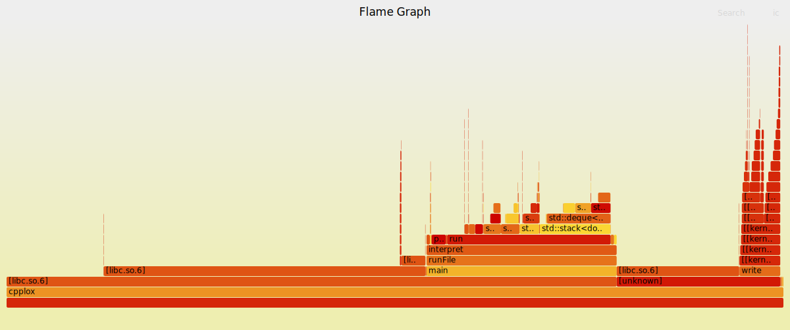

Linux笔记
mopidy# Linux笔记
文件权限控制
chmod 755 /path/to/file
chown ${username} /path/to/file
正常解压gbk编码格式的文件
unzip -O gbk path/to/archive1.zip path/to/archive2.zip
crontab 定时执行脚本
cronie 使用 cronie.service
systemctl enable cronie.service
开始编辑cron表
crontab -e
具体内容
0 9 * * * /path/to/your/script.sh
这个例子中，0代表分钟，9代表小时，* * *代表日期、月份和星期几，表示每天都匹配。/path/to/your/script.sh是要执行的脚本的路径。
- 分钟（0-59）
- 小时（0-23）
- 日期（1-31）
- 月份（1-12）
- 星期几（0-7，其中0和7都表示星期日）
输出所有定时任务
crontab -l
openssl¶
产生随机序列
生成十六进制的随机序列
openssl rand -hex 10 # 长度为10个*字节*
结果:
c5615b731705563b0b5b
生成Base64编码的随机字符串
openssl rand -base64 32
结果:
rDJ81m4vz9t7AHqbGwoUqsEWl5RondxGOGcx1DAx7g0=
生成字母数字随机字符串
openssl rand -base64 24 | tr -dc 'a-zA-Z0-9'
结果:
vBI6BZmKEJVZa3An01aJlLqDI7WM5Ef
其他生成随机字符串方式
生成10位纯数字：
tr -cd '0-9' < /dev/urandom | head -c 10; echo
tr -cd '0-9': 只保留数字，删掉其他字符。
head -c 10: 截取前10个字符。
生成8位十六进制数：
tr -cd 'a-f0-9' < /dev/urandom | head -c 8; echo
shell中1&将STDERR和STDOUT的输出重定向到同一个管道
chattr 修改文件属性
使某文件/文件夹不可被修改/删除
chattr +i path/to/file_or_directory
lsattr 查看文件属性
Diff使用¶
比较文件 （列出从原文件到新文件的修改）：
diff 原文件 新文件
比较文件，忽视空白字符：
diff [-w|--ignore-all-space] 原文件 新文件
比较文件，并排展示文件差异：
diff [-y|--side-by-side] 原文件 新文件
比较文件，以统一形式展示不同区别 （ 形式同 git diff）：
diff [-u|--unified] 源文件 新文件
递归地比较目录 （展示不同文件和目录的名字和差异）：
diff [-r|--recursive] old_directory new_directory
比较目录（只展示不同文件的文件名）：
diff [-r|--recursive] [-q|--brief] old_directory new_directory
根据两个文本文件的差异，为 Git 创建补丁文件，不存在的文件会被视为空文件：
diff [-a|--text] [-u|--unified] [-N|--new-file] 原文件 新文件 > diff.patch
比较文件，打印彩色的输出，并尽可能找出最小的改变：
diff [-d|--minimal] --color=always 原文件 新文件
-N 查看新增的文件，比较目录时需要用到
任务管理¶
jobs 查看终端中的任务列表（在后台运行的任务）
bg和fg：将后台作业切换到前台或将前台作业切换到后台。
bg %job_number: 将编号为job_number的作业切换到后台运行。fg %job_number: 将编号为job_number的作业切换到前台运行。
按下 Ctrl + Z 键组合可以将正在运行的任务（前台任务）暂停，并将其切换到后台。这个操作通常称为挂起（suspend）。
disown shell内建命令。是一个 shell 内建命令，用于将后台作业从当前 shell 的作业列表中移除。 这意味着，即使终端关闭，相关进程也不会收到挂起信号（SIGHUP），从而继续运行。
比如
dolphin . &
disown
nohup（no hang up）命令用于运行程序时忽略挂起信号（SIGHUP），即使终端关闭，程序也会继续运行。 它会将程序的标准输出和标准错误输出重定向到 nohup.out 文件，除非你指定了其他输出文件。
nohup dolphin . &
获得两个文件之间的相对路径
realpath FILE(traget) --relative-to=FILE(current)
ln： - 创建指向文件或目录的符号链接： ln -s /路径/到/文件或目录 路径/到/符号链接
-
覆盖现有的符号链接以指向其他文件： ln -sf /路径/到/新文件 路径/到/符号链接
-
创建文件的硬链接： ln /路径/到/文件 路径/到/硬链接
软链接类似于Windows的快捷方式
而对于硬链接类似于一种clone，原文件被修改也会同步到硬链接上，但删除不会。 硬链接不能链接目录，只能链接文件。
scp 传输文件
scp 本地文件路径 remote_username@remote_ip:remote_文件名 # 本地文件复制到远程
scp remote_username@remote_ip:remote_文件名 本地文件路径 # 远程文件复制到本地
使用方式类似于cp
-r 递归复制目录
PATH环境变量
vim ~/.bashrc
export PATH=$PATH:/usr/local/src/python3/bin
# 或
export PATH=/usr/local/src/python3/bin:$PATH
网络¶
lsof¶
查看端口占用情况
lsof -i:[port]
netstat¶
netstat命令用于显示网络连接和路由表信息。
-n：直接使用IP地址，而不通过域名服务器。 -l：显示监控中的服务器的Socket。 -t：显示TCP传输协议的连线状况。 -u：显示UDP传输协议的连线状况。 -p：显示正在使用Socket的程序识别码和程序名称。
显示所有活动的网络连接：
netstat -a
好用的工具¶
cloc 统计代码行数
tokei 统计代码行数，但是速度更快
ncdu 查看文件(夹)占用空间
tealdeer tealdeer(tldr的rust客户端，速度更快)
dwebp 将webp图片转换为png格式
dwebp input.webp -o output.png
notify-send 使用当前桌面环境的消息系统发送消息
notify-send "Test" "This is a test"
notify-send "Test" --icon=google-chrome --app-name="Google Chrome"
notify-send -t 5000 "Test" "This is a test"
命令行查看文件¶
csv
column -s, -t file.csv | less -S
测试¶
hyperfine benchmark工具
hyperfine --prepare zsh --warmup 10 --min-runs=1000 './path/to/program > /dev/null'
valgrind C++应用内存、并发问题检查
valgrind --leak-check=full --show-leak-kinds=all ./my_program # 检查内存泄露问题
valgrind --tool=helgrind ./my_program # 检查并发问题
webbench 网络压力测试
webbench -c [并发量] -t [时间-秒] [target]
# sample
webbench -c 500 -t 60 localhost:8080
locust 性能测试
Locust - A modern load testing framework
火焰图 flamegraph
安装
sudo yay -S flamegraph-git
使用
# 生成文件 perf.data
sudo perf record -F 99 -p {pid} -g -- sleep 60 # 使用 Linux perf_events（又名“perf”）捕获 60 秒的 99 赫兹堆栈样本，程序PID为{pid}
# 生成 out.perf
sudo perf script > out.perf
# 生成 out.folder
sudo stackcollapse-perf out.perf > out.folded
# 生成svg图片
sudo flamegraph.pl out.folded > {name}.svg
快速bash脚本
使用:
./script.sh {pid}
#! /usr/bin/env bash
# 使用 Linux perf_events（又名“perf”）捕获 30 秒的 99 赫兹堆栈样本，程序PID为{pid}
# sudo perf record -F 99 -p "$1" -g -- sleep 30
# 分析程序 $1
sudo perf record "$1" -F 99 -g -- sleep 30
# 生成 out.perf
sudo perf script > out.perf
# 生成 out.folder
sudo stackcollapse-perf out.perf > out.folded
# 生成svg图片
sudo flamegraph out.folded > "$1".svg
sudo chmod +r "$1".svg
结果: 
{kind=link}
reference: GitHub - brendangregg/FlameGraph: Stack trace visualizer 利用火焰图分析程序性能瓶颈 | 齐浩天的博客
桌面环境¶
kde查看哪些应用运行在x11或wayland下
qdbus org.kde.KWin /KWin org.kde.KWin.showDebugConsole
chrome electron wayland配置
chrome-flags.conf
--enable-features=UseOzonePlatform
--ozone-platform=wayland
--enable-wayland-ime
20 之后 electron-flags.conf
--ozone-platform-hint=auto
--enable-wayland-ime
应用程序¶
mpv播放器
启用硬件解码(自动选择解码方式)
--hwdec=auto
anacron¶
anacron 是 Linux 系统中一个用于在不连续运行的系统上执行定期任务的工具。与 cron 不同，cron 只会在指定的时间点运行任务，anacron 则会在系统启动时检查是否错过了任务，并在系统开启时补上。
anacron 与 cron 的区别¶
cron是基于时间的调度器，它依赖于系统的时间和日期，假如系统在某个预定的时间没有运行，任务会被错过。anacron适用于那些不是持续运行的系统（比如笔记本、台式机等），如果系统没有在预定时间运行，anacron会确保任务在下次开机后被执行。
1. 配置文件¶
anacron 的配置文件通常是 /etc/anacrontab。你可以在这里定义定期任务。文件的格式如下：
# period delay job-identifier command
# period: 任务周期（天数）
# delay: 任务延迟（分钟），即任务开始执行前的等待时间
# job-identifier: 任务的唯一标识符
# command: 执行的命令
2. /etc/anacrontab 文件的结构¶
示例 /etc/anacrontab 文件：
# /etc/anacrontab: configuration file for anacron
# period delay job-identifier command
1 5 cron.daily run-parts /etc/cron.daily
7 10 cron.weekly run-parts /etc/cron.weekly
30 15 cron.monthly run-parts /etc/cron.monthly
1 5 cron.daily run-parts /etc/cron.daily：每天运行/etc/cron.daily目录下的所有脚本，执行时间延迟 5 分钟。7 10 cron.weekly run-parts /etc/cron.weekly：每周运行/etc/cron.weekly目录下的所有脚本，执行时间延迟 10 分钟。30 15 cron.monthly run-parts /etc/cron.monthly：每月运行/etc/cron.monthly目录下的所有脚本，执行时间延迟 15 分钟。
3. 配置周期¶
- 1：表示任务每 1 天执行一次。
- 7：表示任务每 7 天执行一次。
- 30：表示任务每 30 天执行一次。
4. 启动任务¶
当系统启动时，anacron 会检查任务是否已按预定时间执行。如果没有，它会根据 anacrontab 中的配置立即执行该任务。你不需要像 cron 一样确保任务在指定时间前运行，只需要保证系统启动时执行。
5. 手动执行任务¶
你可以通过命令手动执行 anacron 任务：
sudo anacron -s
-s 参数是指手动运行 anacron，这将执行所有错过的任务。注意，anacron 需要有系统时间与系统启动时间的对比，因此通常会自动在系统启动时执行。
6. 检查执行情况¶
anacron 会在 /var/spool/anacron 目录下记录每个任务的上次执行时间。你可以查看这个目录下的文件来确认任务是否成功执行。
总结¶
anacron适用于那些不连续运行的系统，通过启动时检查是否错过了任务并补上。- 配置文件
/etc/anacrontab中定义了任务的周期和执行命令。 anacron会自动在系统启动时运行，因此不需要像cron那样保证系统一直运行。
远程服务器¶
ssh连接服务器，中文目录、文件显示乱码
添加参数
ssh -o SendEnv=LANG user@server
或者在 ~/.ssh/config 中添加
Host *
SendEnv LANG LC_*
Systemd¶
用户级配置¶
环境变量
- 创建或编辑
~/.config/environment.d/*.conf
mkdir -p ~/.config/environment.d
nano ~/.config/environment.d/99-my-vars.conf
- 写入环境变量
PATH=/home/username/my_scripts:${PATH}
JAVA_HOME=/usr/lib/jvm/java-11-openjdk
- 然后运行
systemctl --user daemon-reload
多显卡配置¶
vim/nvim¶
vim - 从标准输入中读取
ls -l | nvim -
vim -R只读模式
nvim +Man!Neovim 有专门的 Man! 命令优化手册阅读体验
python¶
python3 -m http.server 8000
将当前文件夹变为网页服务器，提供文件分享功能